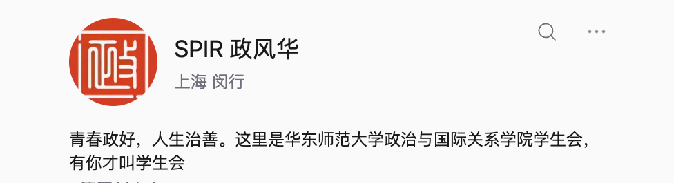
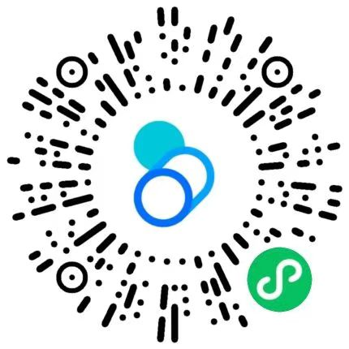

新华社上海分社
视觉传媒部实习生
围绕技术创新、企业公益及茶文化传承，参与选题研究、稿件撰写与修改。独立完成“新华思政学堂×交通银行”青少年金融思政教育项目方案，规划8期线上课程、6省校园活动及融媒体传播。
102.8万累计页面浏览量3篇 / 5个深度报道 / 发布页面4份参与完成的项目方案
另完成1份进博会半年传播规划；课程及校园活动数字为方案规划规模。
华东师范大学 · 政治与国际关系学院
新闻与传播硕士研究生
关注公共传播，参与基层实践。
我在新华社、教育行政部门与基层单位参与新闻采写、项目策划、会务协调和公共服务，也在校园承担宣传管理与就业服务工作。这里记录我的实践经历，以及具体完成的作品。
视觉传媒部实习生
围绕技术创新、企业公益及茶文化传承，参与选题研究、稿件撰写与修改。独立完成“新华思政学堂×交通银行”青少年金融思政教育项目方案，规划8期线上课程、6省校园活动及融媒体传播。
另完成1份进博会半年传播规划；课程及校园活动数字为方案规划规模。
政务实习生 · 实践团总队长
统筹来自19个学院的42名学生，对接实践基地，协调分赴4个社区的团队事务，并完成居委会一线工作。
团队另产出公众号推文10篇、会议记录32篇；7篇发表于“华东师大选调之声”，1篇发表于校级官媒，1篇获“上海临港青年”转发。
德育科政务实习生（挂职）
优秀实习生服务全国中小学德育工作研讨班，承担讲解词、新闻通稿及现场协调；参与年度总结与领导发言稿起草、学生实践基地成果汇编校对，以及宋庆龄奖学金评选材料审核、公示与结果推送。
参与覆盖全区中小学的德育报表核对和评价指标设计，整理十余类年度档案。
“百县笃行计划”政务实习生
参与火把节全媒体宣传及官方账号运营，完成11场演出拍摄，独立策划、拍摄和剪辑视频3条，参与制作5条；参与文旅资源普查与项目申报。
部分内容获大理州人民政府官方平台转发；获暑期社会实践优秀个人。
选题研究 · 稿件撰写 · 内容修改
围绕技术创新、企业公益与茶文化传承完成3篇深度报道。以下为新华社客户端原文；102.8万为2026年9月实习汇报中5个发布页面的累计浏览量。
技术创新与产品报道
阅读原文 ↗新华社客户端 / 02茶文化传承与品牌表达
阅读原文 ↗新华社客户端 / 03企业公益与城市人文关怀
阅读原文 ↗视频策划 · 摄影摄像 · 后期剪辑
华东师范大学政治与国际关系学院
开展部门成员专业技能培训，推动宣传工作标准操作流程（SOP）建设，规范内容制作及成员协作。
参与学院活动组织，统筹任务分工、新闻采写和摄影摄像。自任宣传部干事以来，累计参与活动组织、拍摄及文稿工作15余次，相关内容在学院官方微信公众号发布。

华东师范大学
对接学校就业中心，承接向临港投递简历学生的电话回访任务；招募回访人员、建群分工，制定统一回访话术与记录格式，整理回访数据并筛选典型案例。
核心负责采访组织、稿件撰写、推文排版及排期统筹，审核并修改稿件，完成7期人物推送及相关背景资料搜集。
暑期典型案例 · 代表报道
联合40家临港重点企事业单位举办专场招聘会及校企人才交流座谈会，促进学生与用人单位对接。
着力推进“华东师范大学临港人才站”小程序建设，搭建线上就业服务平台。

微信扫码，或保存图片后在微信中识别小程序码。
保存小程序码提出社团建设方案并推动落地；完成《高校春季促就业攻坚行动宣传素材》等申报材料，撰写社会实践优秀案例推荐说明。相关汇报材料入选《2026年高校师生主题社会实践开展情况总结》。
工作方案、新闻稿与讲话稿撰写；摄影摄像、微信公众号排版、PR与剪映。
问卷设计、访谈与SPSS分析；Word、Excel函数及数据透视表、PowerPoint。
独立搭建热点搜寻系统和评论分析流程，自动抓取去重，归纳讨论方向与情绪信号，形成传播建议及结构化洞察。
英语六级 616分 / 普通话二级甲等 / 高级中学语文教师资格证
{kind=link}